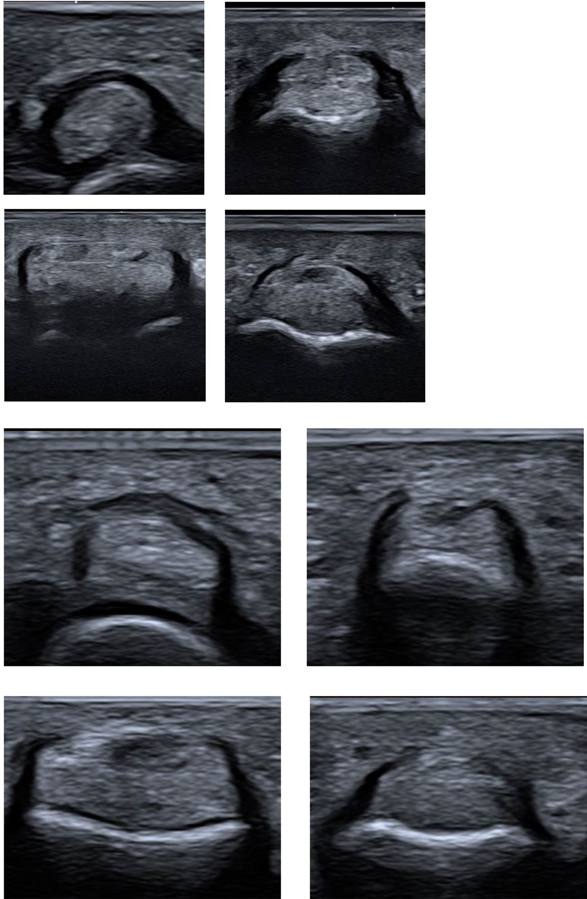

Respuesta clínica corta
¿Qué poleas de los dedos del pie se visualizan con mayor fiabilidad?
Las de los dedos primero a cuarto se identificaron de forma consistente; el quinto dedo fue más difícil y el acuerdo interobservador solo bajo a moderado.
Dato clave8 pies cadavéricos · 30 sanos · ICC 0,393–0,529
Las poleas de los dedos primero a cuarto fueron visibles de forma consistente; el quinto dedo y el acuerdo entre operadores fueron menos fiables, por lo que la no visualización debe comunicarse.
Observado
Qué encontró y cómo interpretarlo
La combinación de disección, voluntarios y dos sondas permite describir factibilidad y dificultades reales.
El acuerdo interobservador bajo a moderado limita la confianza en mediciones pequeñas.
Los casos clínicos enriquecen el patrón visual, pero no constituyen una cohorte diagnóstica.
Atlas del artículo
Imágenes para entender el procedimiento
Estas figuras proceden del artículo original y se reproducen con licencia abierta verificada. Se muestran por su utilidad anatómica o técnica, no como prueba aislada de diagnóstico o eficacia.

La figura muestra el aspecto normal de poleas anulares en diferentes dedos y transductores.
Cómo leerlaLa apariencia procede de participantes sanos y no funciona como umbral de lesión.
Pistoia F y colaboradores. Figura reproducida bajo licencia CC BY 4.0; consulte el artículo original. · Fuente · Licencia CC BY.
Procedimiento del artículo
Barrido de poleas anulares de los dedos del pie
La exploración utiliza sonda lineal o tipo hockey de alta frecuencia, gel abundante y cortes transversal y longitudinal para controlar anisotropía y separar polea, tendón flexor y cortical.
- Sondas
- 22–8 y 18–5 MHz
- Fiabilidad
- ICC 0,393–0,529
- Dedo V
- Menor visualización
- 01
Eje transversal
Colocar la sonda perpendicular a la falange y desplazarla desde la cabeza metatarsiana hacia distal.
- Referencias
- Tendones flexores, placa plantar, falange y polea.
- Lectura
- La polea aparece ligeramente hiperecogénica y es sensible a anisotropía.
- 02
Eje longitudinal
Girar 90 grados y seguir el complejo polea-tendón durante flexión y extensión suaves.
- Referencias
- Cortical falángica y tendón flexor.
- Lectura
- Confirmar continuidad y evitar usar un único corte para clasificar lesión.
Protocolo reconstruido de forma prudente desde el texto completo y sus figuras. Sirve para comprender la adquisición y no sustituye formación, razonamiento clínico ni supervisión.
Aplicabilidad
Qué significa clínicamente
Documentar sonda, eje y dedo cuando se informa una polea.
Considerar no evaluable el quinto dedo cuando la imagen no es reproducible.
Límite
Qué no permite afirmar
Muestra anatómica y sana pequeña.
Fiabilidad interobservador limitada.
Sin sensibilidad, especificidad ni valores de referencia patológicos.
Contexto
¿Se parece a tu paciente?
- Población estudiada
- Cuatro cadáveres con ocho pies y 15 personas sanas con 30 pies; casos patológicos añadidos con finalidad ilustrativa.
- Diseño
- Estudio anatómico cadavérico, fiabilidad en sanos y serie ilustrativa
- Resultado evaluado
- Visualización, grosor y acuerdo entre operadores
Fuente primaria
Lee el estudio, no solo nuestro análisis
Pistoia F, et al. High-resolution ultrasound of the annular pulley system in the toes. Skeletal Radiol. 2025;54(10):2045-2054. doi: 10.1007/s00256-025-04901-w
Responsabilidad editorial
Francisco José Extremera García
Fisioterapeuta colegiado ICPFA 4288 · Osteópata D.O.
Creador y responsable editorial de FisioLógico
- Última revisión
- Conflictos de interés
- Ninguno declarado.